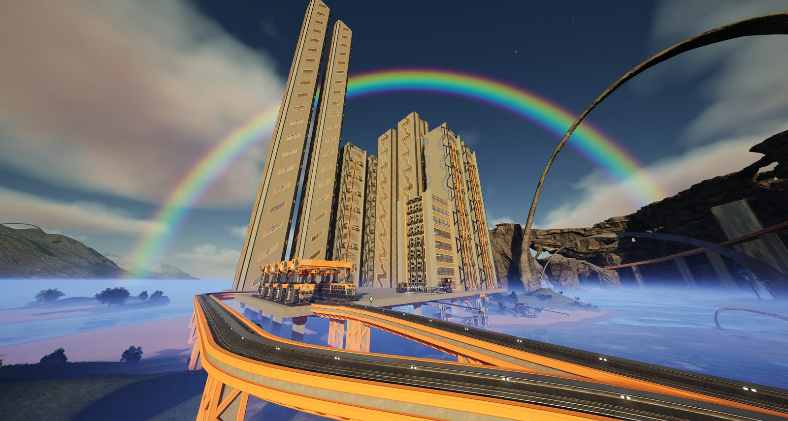
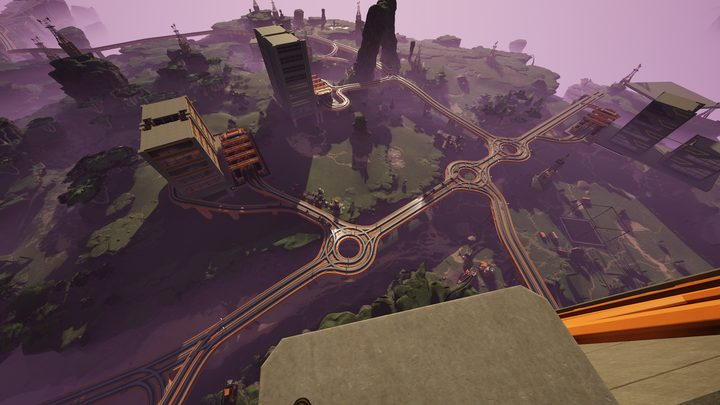
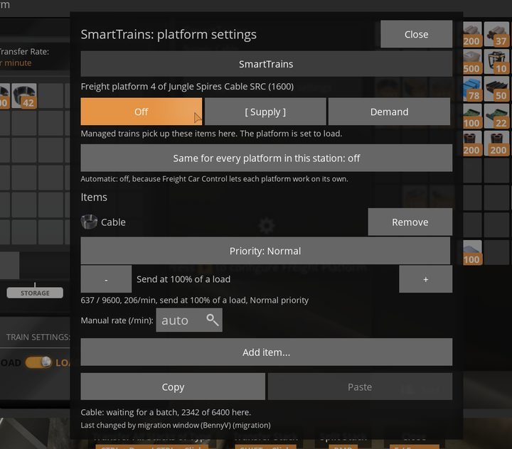
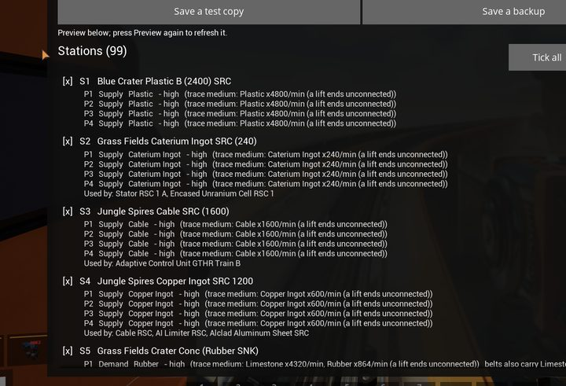
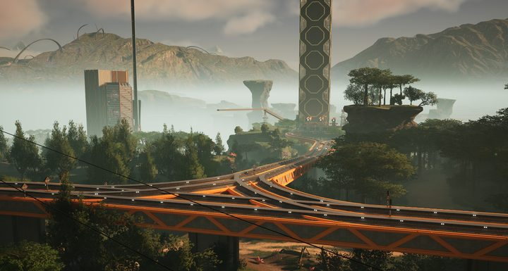
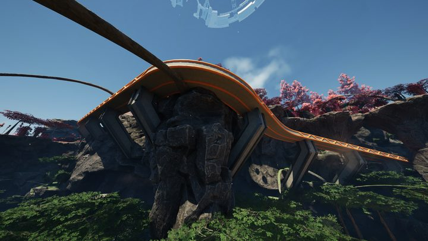
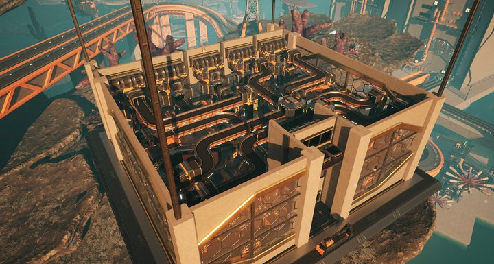
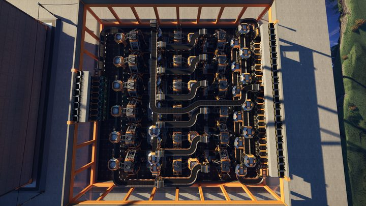

2026 SRC
Satisfactory Mods
Thirteen C++ mods for the factory game Satisfactory, with about 19,500 downloads in two months, including signal-free train traffic control, demand-driven dispatch and a server networking fix.
- C++
- Unreal Engine
- Multiplayer networking
- Algorithms
- Reverse engineering

Satisfactory is built on Unreal Engine. Its mod loader (SML) exposes the game's C++ classes, so these mods are native C++ that hooks into game systems, replicates state to multiplayer clients, and adds UI and chat commands. I published ten of them on ficsit.app, the game's mod repository, between September and November 2026. Together they have about 19,500 downloads.
Highlights
BoomBox Plus: 8,100+ downloads
Plays your own music, YouTube, SoundCloud, Spotify links and internet radio through the in-game Boom Box. Everyone in earshot hears the same song at the same moment, with synced lyrics.
Auto Trains: traffic without signals
Every self-driving train books the track and switches on its route as time slots around the other trains (space-time planning). It then speeds up, slows down, waits or reroutes so that no two trains ever need the same track at the same time. Trains follow each other through roundabouts, take the fastest route given everyone's bookings, and docked trains book their departures ahead from their timetables. Nothing is written into vanilla save data.


Smart Trains: demand-driven dispatch
Platforms get a role (supply, demand or sink) and an item list. Managed trains are shared out across consumer stations in proportion to what each one needs, its consumption rate times its loop's round-trip time, and each train runs one loop: fill at the suppliers, unload at the consumer, repeat.




Depot Network Fix: server stability
On busy servers, the Dimensional Depot's item-count updates overflowed the reliable network buffer and got players kicked. This server-only mod merges the updates and sends them about once a second, holding back while a client is behind.
Telescreen (in development)
Billboard-sized in-game screens that play the same video for every player, in sync, with 3D audio. A separate helper process fetches and decodes the media.
The test world
I build and test the mods on my own save, so they have to hold up on a large rail network and dense factories.








All mods
| Mod | What it does | Downloads |
|---|---|---|
| BoomBox Plus | Your own music through the Boom Box, synced in multiplayer | 8,133 |
| Better Movement | Slide up steeper slopes, configurable per tier | 3,832 |
| Auto Trains | Train traffic control without block or path signals | 3,680 |
| Smart Trains | Trains dispatched from supply to demand | 1,604 |
| Freight Car Control | Per-stop, per-car load/unload rules | 1,201 |
| Conveyor Lift Auto-Connect Plus | Auto-connects lifts between stacked blueprints | 485 |
| Exact Foundation Snapping | Exact rotation when snapping to foundations | 431 |
| Modular Stations Gantry Fix | Stopgap crash fix for a popular third-party mod | 115 |
| Depot Network Fix | Fixes "reliable buffer overflow" kicks | 89 |
| Telescreen | Synced video screens (in development) | n/a |
| VehicleSettingsCopy | Copy and paste vehicle timetables and fuel | GitHub only |
| ContinuousElevatorSync | Keeps a server-side mechanic on factory time | GitHub only |
| AdaVoicePackLoader | Loads replacement voice-line packs | GitHub only |
Download counts from ficsit.app, November 2026.